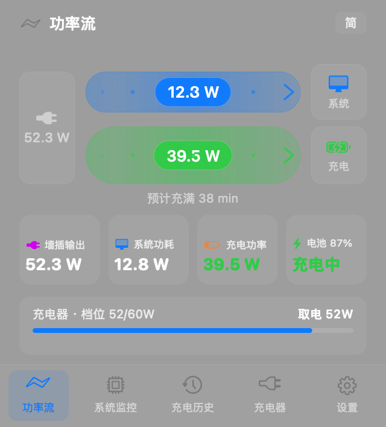
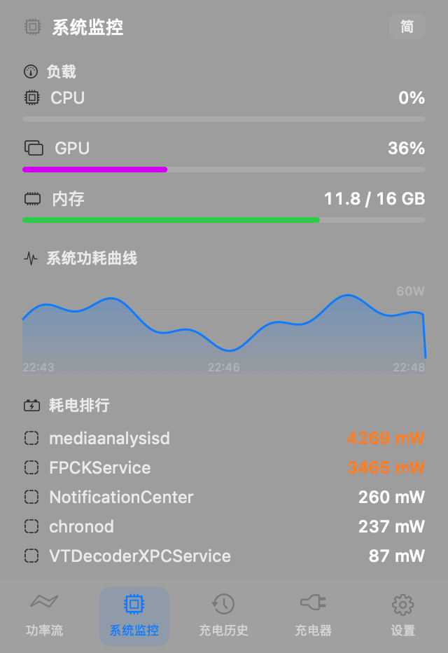
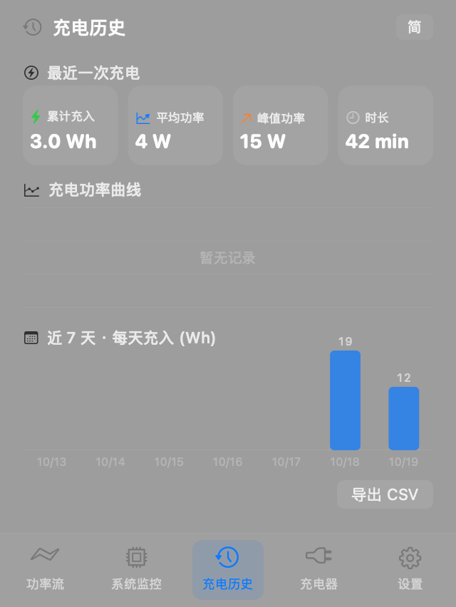
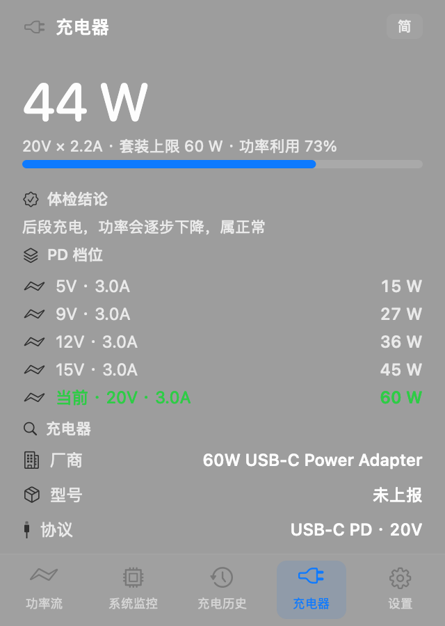
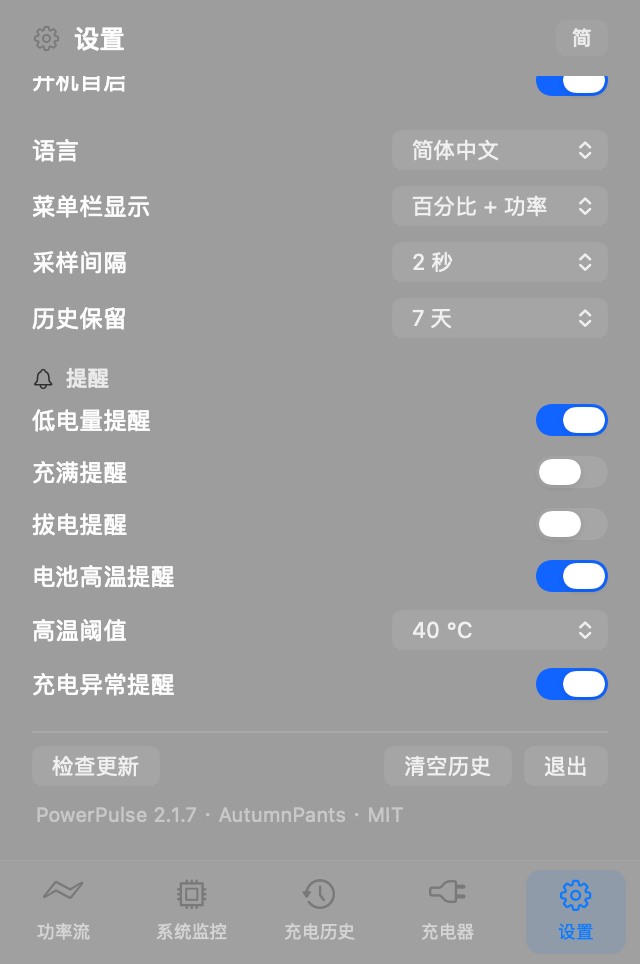

功率流
从墙插到电池，一条带子说清楚。粗细跟着瓦数走：充电时充电器分成系统与电池两路；充电器不够用时，充电器和电池一起喂系统。
- 三个节点：墙插、系统、电池
- 带子粗细按 0.7 次方压缩，低功率也看得出差别
- 末端的箭头标明能量方向
每秒采样一次，把墙插输出、系统功耗、电池充电功率拆开显示。插上充电器那一刻，就知道这套充电套装到底跑了多少。


墙插给了多少、系统吃了多少、电池进了多少，三笔必须能互相加减。对不上，就说明有地方在偷偷耗电。
从墙插到电池，一条带子说清楚。粗细跟着瓦数走：充电时充电器分成系统与电池两路；充电器不够用时，充电器和电池一起喂系统。

CPU、GPU、内存占用，加上一份按能耗排序的进程榜。

最近一次充进去多少 Wh，近一周每天多少，一条 CSV 导出。

协商到几伏几安、支持哪些 PD 档位、为什么没跑满。

采样间隔、历史保留、通知阈值、菜单栏显示与语言。
测电流的分流器、读数的指针表、走纸记录曲线、每秒跳一格的棘轮、报信的铜铃——每个模块都对应这台仪器上的一个零件。可以直接在图上拖动。
没有账号、没有云同步、没有「猜你喜欢」。数据全部留在本机。
采样、菜单栏、小组件同一节拍。插拔电源立刻响应，不用等下一个刷新周期。
读得到协商电压电流、PD 档位表、厂商与型号。跑不满时给结论，不给原始码。
循环次数、实际满容量、设计容量、当前温度。
SQLite + WAL，按采样间隔逐条记录，定期合并日志。
不打开面板也能看到当前功率与电量。
不猜、不估算，全部读系统自己的寄存器。
AppleSmartBattery：瞬时功率、电压电流、循环次数、温度AdapterDetails 与 UsbHvcMenu：协商档位、PD 能力表、厂商型号rusage_info_v6 的 ri_energy_nj 差分，不需要 rootdraw(_:) 画的纯 AppKit 写成，没有 SwiftUI、没有第三方依赖。一个测电源的软件，自己先不能费电。

免安装器，拖进「应用程序」即可。没有 Apple 公证，首次打开会被系统拦一次。
笔记本看电池与充电；台式机（Mac Studio / mini / Pro）没有电池，整机功率从 SMC 读。
ad-hoc 签名、未公证：首次打开若被拦，去「系统设置 → 隐私与安全性 → 仍要打开」。
curl -fsSL https://powerpulse.qijunhao.xyz/install.sh | bash# 需要 macOS 14+ 与命令行工具 git clone https://github.com/777cola/PowerPulse.git cd PowerPulse && ./build_app.sh # 产出 PowerPulse.app 与小组件